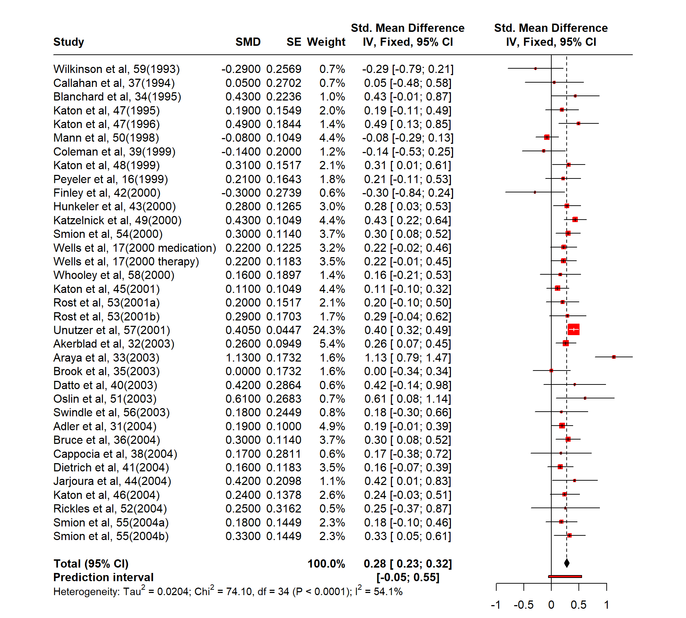
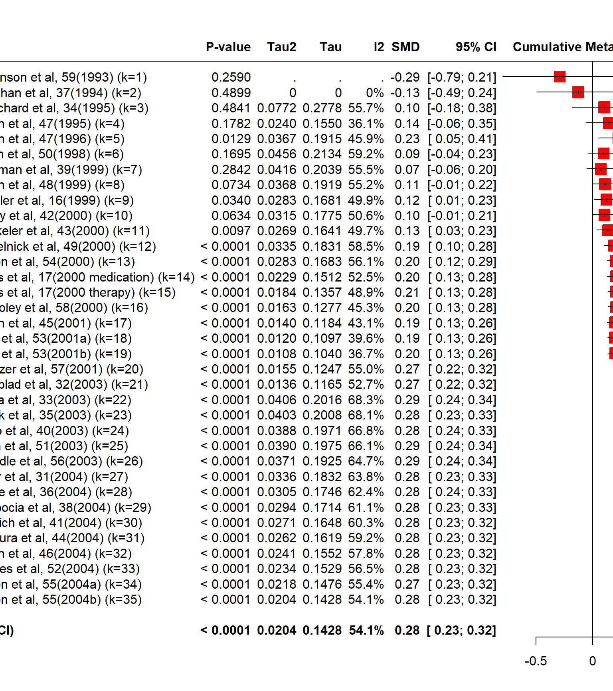
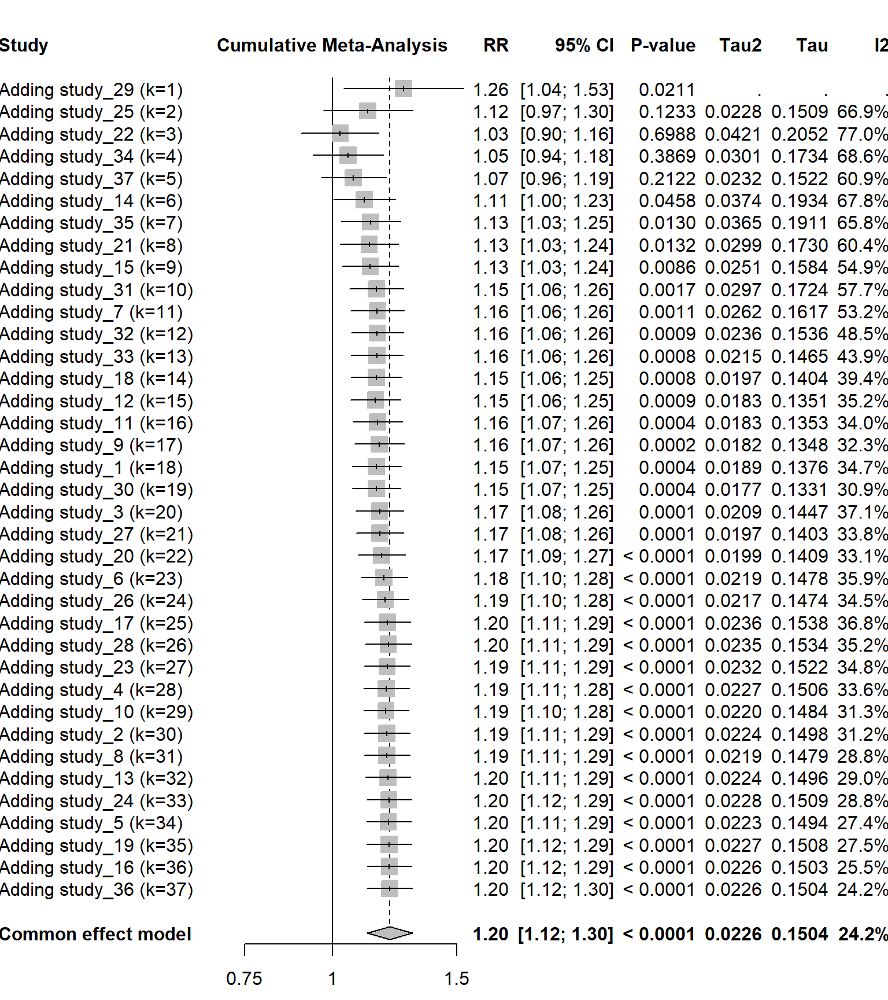

메타분석에서는 전체 분석 결과의 오류 검정에 대한 분석 방법으로 출판 비뚤림 분석과 더불어 ‘누적메타분석’과 ‘민감도분석’이 많이 활용된다. 누적메타분석(cumulative meta-analysis)은 시간의 흐름에 따라 연구 결과나 트렌드가 어떻게 달라지는가를 추적하는 분석 방법이다. 즉, 출판연도별로 정렬하여 시간이 경과함에 따라 효과크기가 어떻게 변화하는지 분석할 수 있다. 또 다른 방법은 연구의 정밀성, 즉 표본이 큰 연구들로부터 차례로 투입하여 효과크기가 어떻게 달라지는지를 분석할 수 있다.
6.1.1 시간적 순서에 따른 누적메타분석
시간적 순서에 따른 누적메타분석을 위해 일차진료기관에서 우울증에 대한 전통적인 치료방법과 여러 전문가를 참여시킨 연합적 치료방법(collaborative care)의 치료효과를 비교한 35개 연구를 살펴보자(Gilbody et al., 2006).
cum <-read.table(text='study yi vi setting year"Adler et al, 31(2004)" 0.19 0.01 1 2004"Akerblad et al, 32(2003)" 0.26 0.009 0 2003"Araya et al, 33(2003)" 1.13 0.03 0 2003"Blanchard et al, 34(1995)" 0.43 0.05 0 1995"Brook et al, 35(2003)" 0 0.03 0 2003"Bruce et al, 36(2004)" 0.3 0.013 1 2004"Callahan et al, 37(1994)" 0.05 0.073 1 1994"Cappocia et al, 38(2004)" 0.17 0.079 1 2004"Coleman et al, 39(1999)" -0.14 0.04 1 1999"Datto et al, 40(2003)" 0.42 0.082 1 2003"Dietrich et al, 41(2004)" 0.16 0.014 1 2004"Finley et al, 42(2000)" -0.3 0.075 1 2000"Hunkeler et al, 43(2000)" 0.28 0.016 1 2000"Jarjoura et al, 44(2004)" 0.42 0.044 1 2004"Katon et al, 45(2001)" 0.11 0.011 1 2001"Katon et al, 46(2004)" 0.24 0.019 1 2004"Katon et al, 47(1995)" 0.19 0.024 1 1995"Katon et al, 47(1996)" 0.49 0.034 1 1996"Katon et al, 48(1999)" 0.31 0.023 1 1999"Katzelnick et al, 49(2000)" 0.43 0.011 1 2000"Mann et al, 50(1998)" -0.08 0.011 0 1998"Oslin et al, 51(2003)" 0.61 0.072 1 2003"Peyeler et al, 16(1999)" 0.21 0.027 0 1999"Rickles et al, 52(2004)" 0.25 0.1 1 2004"Rost et al, 53(2001a)" 0.2 0.023 1 2001"Rost et al, 53(2001b)" 0.29 0.029 1 2001"Smion et al, 54(2000)" 0.3 0.013 1 2000"Smion et al, 55(2004a)" 0.18 0.021 1 2004"Smion et al, 55(2004b)" 0.33 0.021 1 2004"Swindle et al, 56(2003)" 0.18 0.06 1 2003"Unutzer et al, 57(2001)" 0.405 0.002 1 2001"Wells et al, 17(2000 medication)" 0.22 0.015 1 2000"Wells et al, 17(2000 therapy)" 0.22 0.014 1 2000"Whooley et al, 58(2000)" 0.16 0.036 1 2000"Wilkinson et al, 59(1993)" -0.29 0.066 0 1993', header=T)cum
study yi vi setting year
1 Adler et al, 31(2004) 0.190 0.010 1 2004
2 Akerblad et al, 32(2003) 0.260 0.009 0 2003
3 Araya et al, 33(2003) 1.130 0.030 0 2003
4 Blanchard et al, 34(1995) 0.430 0.050 0 1995
5 Brook et al, 35(2003) 0.000 0.030 0 2003
6 Bruce et al, 36(2004) 0.300 0.013 1 2004
7 Callahan et al, 37(1994) 0.050 0.073 1 1994
8 Cappocia et al, 38(2004) 0.170 0.079 1 2004
9 Coleman et al, 39(1999) -0.140 0.040 1 1999
10 Datto et al, 40(2003) 0.420 0.082 1 2003
11 Dietrich et al, 41(2004) 0.160 0.014 1 2004
12 Finley et al, 42(2000) -0.300 0.075 1 2000
13 Hunkeler et al, 43(2000) 0.280 0.016 1 2000
14 Jarjoura et al, 44(2004) 0.420 0.044 1 2004
15 Katon et al, 45(2001) 0.110 0.011 1 2001
16 Katon et al, 46(2004) 0.240 0.019 1 2004
17 Katon et al, 47(1995) 0.190 0.024 1 1995
18 Katon et al, 47(1996) 0.490 0.034 1 1996
19 Katon et al, 48(1999) 0.310 0.023 1 1999
20 Katzelnick et al, 49(2000) 0.430 0.011 1 2000
21 Mann et al, 50(1998) -0.080 0.011 0 1998
22 Oslin et al, 51(2003) 0.610 0.072 1 2003
23 Peyeler et al, 16(1999) 0.210 0.027 0 1999
24 Rickles et al, 52(2004) 0.250 0.100 1 2004
25 Rost et al, 53(2001a) 0.200 0.023 1 2001
26 Rost et al, 53(2001b) 0.290 0.029 1 2001
27 Smion et al, 54(2000) 0.300 0.013 1 2000
28 Smion et al, 55(2004a) 0.180 0.021 1 2004
29 Smion et al, 55(2004b) 0.330 0.021 1 2004
30 Swindle et al, 56(2003) 0.180 0.060 1 2003
31 Unutzer et al, 57(2001) 0.405 0.002 1 2001
32 Wells et al, 17(2000 medication) 0.220 0.015 1 2000
33 Wells et al, 17(2000 therapy) 0.220 0.014 1 2000
34 Whooley et al, 58(2000) 0.160 0.036 1 2000
35 Wilkinson et al, 59(1993) -0.290 0.066 0 1993
자료를 연도순으로 정렬하면 다음과 같다.
cum <- cum[order(cum$year),]head(cum, 10)
study yi vi setting year
35 Wilkinson et al, 59(1993) -0.29 0.066 0 1993
7 Callahan et al, 37(1994) 0.05 0.073 1 1994
4 Blanchard et al, 34(1995) 0.43 0.050 0 1995
17 Katon et al, 47(1995) 0.19 0.024 1 1995
18 Katon et al, 47(1996) 0.49 0.034 1 1996
21 Mann et al, 50(1998) -0.08 0.011 0 1998
9 Coleman et al, 39(1999) -0.14 0.040 1 1999
19 Katon et al, 48(1999) 0.31 0.023 1 1999
23 Peyeler et al, 16(1999) 0.21 0.027 0 1999
12 Finley et al, 42(2000) -0.30 0.075 1 2000
Number of studies: k = 35
SMD 95% CI z p-value
Common effect model 0.2757 [ 0.2325; 0.3190] 12.51 < 0.0001
Prediction interval [-0.0517; 0.5468]
Quantifying heterogeneity (with 95% CIs):
tau^2 = 0.0204 [0.0072; 0.0678]; tau = 0.1428 [0.0848; 0.2604]
I^2 = 54.1% [32.7%; 68.7%]; H = 1.48 [1.22; 1.79]
Test of heterogeneity:
Q d.f. p-value
74.10 34 < 0.0001
Details of meta-analysis methods:
- Inverse variance method
- Restricted maximum-likelihood estimator for tau^2
- Q-Profile method for confidence interval of tau^2 and tau
- Calculation of I^2 based on Q
- Prediction interval based on t-distribution (df = 34)
forest(fit, layout="RevMan5")

meta packages에서 누적메타분석(cumulative meta-analysis)는 metacum 함수를 이용한다.
forest(metacum(fit), layout="RevMan5")

누적분석 결과를 살펴보면, 1990년대 중반 이후 특히 2000년대에 들어서면서 연합적 치료방법의 효과가 전통적인 치료방법에 비해 긍정적이면서 안정적인 결과(0.20~0.28)를 보여주고 있음을 알 수 있다.
6.1.2 표본크기에 따른 누적메타분석
누적메타분석은 시간의 흐름에 따라 결과가 어떻게 축적되어 나타나는지를 검증하는 방법으로 고안되었지만 표본크기가 큰 연구부터 투입하여 효과크기가 어떻게 변화하는지를 분석할 수 있다. 즉, 표본크기가 큰 연구들부터 차례로 투입함으로써 효과크기가 어느 정도 안정화(stabilized)되면 표본크기가 작은 연구들을 더 투입해도 효과크기에 큰 변화가 나타나지 않는지를 확인한다. 만약 그렇게 되면 작은 연구들이 전체효과크기에 영향을 미친다고 보기 어렵다.
앞서 사용한 간접흡연이 배우자의 폐암 발생에 미치는 영향을 분석한 자료로 살펴보자.
meta packages에서 누적메타분석(cumulative meta-analysis)는 metacum 함수를 이용한다.
Number of studies: k = 37
RR 95% CI z p-value
Common effect model 1.2048 [1.1199; 1.2962] 5.00 < 0.0001
Prediction interval [0.9035; 1.7176]
Quantifying heterogeneity (with 95% CIs):
tau^2 = 0.0226 [0.0000; 0.0663]; tau = 0.1504 [0.0000; 0.2575]
I^2 = 24.2% [0.0%; 49.8%]; H = 1.15 [1.00; 1.41]
Test of heterogeneity:
Q d.f. p-value
47.49 36 0.0952
Details of meta-analysis methods:
- Inverse variance method
- Restricted maximum-likelihood estimator for tau^2
- Q-Profile method for confidence interval of tau^2 and tau
- Calculation of I^2 based on Q
- Prediction interval based on t-distribution (df = 36)
forest(metacum(fit_pub2, sortvar=publi2$vi) )

연구 크기순으로 22개(study 20까지) 연구를 투입했을 때(이때 누적가중치는 \(90\%\)에 달하는데) 전체효과크기는 1.17로 나타났다. 그리고 나머지 15개의 상대적으로 작은 연구들을 투입하여도 전체효과크기는 1.20으로 조금 증가해 전체 결과에 큰 영향을 미치지는 못하는 것으로 나타났따. 따라서 효과의 크기가 큰 것으로 나타난 작은 표본의 연구들이 전체 결과에 영향을 주는, 즉 비뚤림을 일으키는 원인이라고 말할 수 없다고 하겠다.
요약하면 누적메타분석은 각 연구들이 더해지면서 평균효과크기와 신뢰구간이 어떻게 달라지는 지를 보여준다. 그리고 누적메타분석은 민감도분석의 한 부분으로도 활용될 수 있어 새로운 연구들이 추가되면서 연구 결과(결론)가 어떻게 달라지는지 또는 변함이 없는지를 보여준다.
6.2 민감도분석
민감도분석(sensitivity analysis)은 분석의 기준이나 내용에 따라 그 결과가 어떻게(민감하게) 변화하는지를 검토하는 분석 방법으로, 그 기준은 다음과 같다.
기준
내용
연구 포함 기준
기준에 따라 어떤 특정한 연구나 몇몇 연구가 누락되게 되면 전체적인 결론이 크게 다른게 나타나는가를 검증한다.
통계적 방법
효과크기의 종류(risk ratio 또는 odds ratio), 효과크기의 산출 모형(고정효과모형 또는 랜덤효과모형)
누락된 데이터를 다루는 방법
누락된 연구를 포함시켰을 때 결과가 어느 정도 달라지는가를 검층한다(예: trim-and fill)
민감도분석은 서로 다른 조건(가정)하에서 도출된 분석 결과가 일관성을 보이는지 검증하는 방법이라고 할 수 있다. 즉 체계적 리뷰 과정에서 이루어진 여러 가지 결정의 영향력을 검증하기 위해 그리고 누락된 데이터의 영향을 탐색하기 위해 사용할 수 있다.
madata <-read.table(text='Author TE seTE"Call et al." 0.7091 0.2608"Cavanagh et al." 0.3549 0.1964"DanitzOrsillo" 1.7912 0.3456"de Vibe et al." 0.1825 0.1178"Frazier et al." 0.4219 0.1448"Frogeli et al." 0.6300 0.1960"Gallego et al." 0.7249 0.2247"Hazlett-Stevens & Oren" 0.5287 0.2105"Hintz et al." 0.2840 0.1680"Kang et al." 1.2751 0.3372"Kuhlmann et al." 0.1036 0.1947"Lever Taylor et al." 0.3884 0.2308"Phang et al." 0.5407 0.2443"Rasanen et al." 0.4262 0.2579"Ratanasiripong" 0.5154 0.3513"Shapiro et al." 1.4797 0.3153"SongLindquist" 0.6126 0.2267"Warnecke et al." 0.6000 0.2490', header=T)madata
Author TE seTE
1 Call et al. 0.7091 0.2608
2 Cavanagh et al. 0.3549 0.1964
3 DanitzOrsillo 1.7912 0.3456
4 de Vibe et al. 0.1825 0.1178
5 Frazier et al. 0.4219 0.1448
6 Frogeli et al. 0.6300 0.1960
7 Gallego et al. 0.7249 0.2247
8 Hazlett-Stevens & Oren 0.5287 0.2105
9 Hintz et al. 0.2840 0.1680
10 Kang et al. 1.2751 0.3372
11 Kuhlmann et al. 0.1036 0.1947
12 Lever Taylor et al. 0.3884 0.2308
13 Phang et al. 0.5407 0.2443
14 Rasanen et al. 0.4262 0.2579
15 Ratanasiripong 0.5154 0.3513
16 Shapiro et al. 1.4797 0.3153
17 SongLindquist 0.6126 0.2267
18 Warnecke et al. 0.6000 0.2490
Number of studies: k = 18
SMD 95% CI t p-value
Random effects model (HK) 0.5935 [ 0.3892; 0.7979] 6.13 < 0.0001
Prediction interval [-0.2077; 1.3948]
Quantifying heterogeneity (with 95% CIs):
tau^2 = 0.1337 [0.0295; 0.3533]; tau = 0.3656 [0.1717; 0.5944]
I^2 = 62.6% [37.9%; 77.5%]; H = 1.64 [1.27; 2.11]
Test of heterogeneity:
Q d.f. p-value
45.50 17 0.0002
Details of meta-analysis methods:
- Inverse variance method
- Sidik-Jonkman estimator for tau^2
- Q-Profile method for confidence interval of tau^2 and tau
- Calculation of I^2 based on Q
- Hartung-Knapp adjustment for random effects model (df = 17)
- Prediction interval based on t-distribution (df = 17)